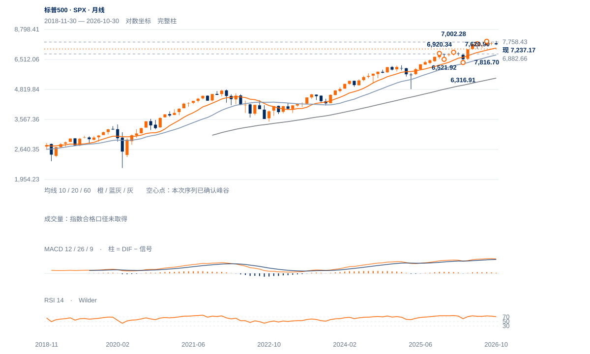

近期由急跌后的弱反抽上调为较强修复，7304—7350未恢复前，维持供应约束下的反复。
标普500 · 2026-11-23完整收盘
反弹4.73%后，7237为何仍低于修复带？
7,237.17+4.73%
跳开修复与日内推进
分期限展望
未来2—6周较大反弹已经发生，7304—7350仍是由回补走向重建的分界。若收复并回试保持，下降扩展解释减弱；未经较高周谷，7716原两日条件仍是更上层验证。
未来1—3个月保留2022、2025、2026主要谷递升背景，同时承认7845高后的中期损伤。单日4.73%反弹尚未恢复原主要谷，新的周级高低点链条比涨幅大小更能区分调整结束与受阻反抽。

长期背景
2022、2025、2026主要大谷递升的长期背景仍在，完整10月均衡约7304。11月7350谷失守已损伤中期，23日大反弹尚未收回该带；本月未结束，最新价只是完整月线之外的观察。 当前日收盘7,237.17与完整10月月线分开观察；11月尚未结束。
中期结构与新证据
完整周线已更新至11月20日：2026-08-13高7,816.70（2026-08-28确认）；2026-09-16低7,507.77（2026-10-02确认）；2026-10-06高7,844.52（2026-10-23确认）。最新一周与上次11月20日背景分别保存；24日国内与23日美股仅为本周进行中观察。23日收7237.17，较20日上涨4.73%，但开7227.41后日内净推进仅9.76点；低7152.66与20日高7198.67重叠，不构成完整上升窗口。7304月度均衡与7350原谷仍在上方。VIX由35.89回26.62，风险缓和仍未回13日19.30。
确认与失效
7304—7350日收恢复并保持，再核原7715.57两日过滤。
7152.66当日低失守削弱反抽；6882.66为20日极值，周级过滤仍仅一周失守。
主要反方
若7304及7350快速收回，失败下破解释增强；跳开后的日内推进有限仍是主要反方。
波动与量能
RSI14 41.34；ATR14 152.13；相对量未取得合格口径